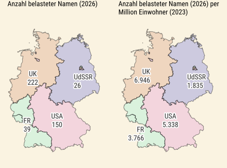
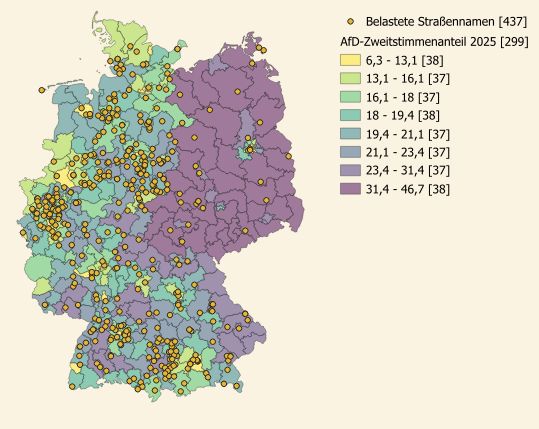
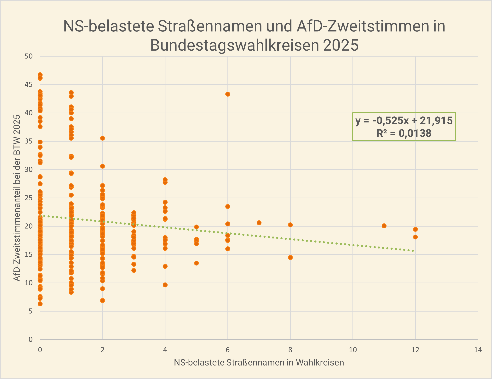

Einführung

Spätestens seit den 2010er Jahren findet in Deutschland eine verstärkte Debatte statt über fragwürdige Namen von Straßen und Plätzen, also Ehrungen historischer Personen im öffentlichen Raum. Anschub bekommt die Debatte nicht nur von historisch Interessierten, sondern auch von aktuellen Entwicklungen, die demokratische Werte, Weltoffenheit und das Bekenntnis zu den Menschenrechten infrage zu stellen scheinen.
Nach der späten Enttarnung der Neonazi-Terrororganisation NSU im Jahr 2011 und dem Zuwachs rechtspopulistischer Tendenzen seit Mitte der 2010er Jahre fanden sich unter zahlreichen Lokalpolitikern Mehrheiten dafür, Benennungen nach Kolonialisten und Rassisten, insbesondere aber Wegbereitern und Anhängern der Nazi-Herrschaft zu überdenken. Prominente Beispiele sind Städte wie Münster, Kiel und Hamburg, die den Namen Paul von Hindenburgs von zentralen Plätzen, Promenaden und großen Verkehrsachsen entfernten und damit jenen antidemokratischen Reichspräsidenten aus dem Stadtbild verbannten, der Hitler einst zur Macht verholfen hatte. Auch die Namen heute kaum noch bekannter, einst aber populärer Autoren, die sich dem Nazi-Regime angedient und für 'Opfermut' im Krieg geworben hatten – wie Agnes Miegel, Ina Seidel und Gustav Frenssen – werden vielerorts getilgt.
Die Debatten über Ehrungen und Umbenennungen schlagen mitunter hohe Wellen und werden auch in der nationalen Öffentlichkeit teilweise kontrovers geführt. Prinzipiell sind die Diskussionen darüber, ob belastete Straßenbenennungen und ähnliche Ehrungen im öffentlichen Raum noch tragbar sind, aber ein Thema der Kommunalpolitik. In einer Handreichung von 2021 weist der Deutsche Städtetag auf die Komplexität solcher Entschlussfassungen hin, die nicht nur historische Forschungen, sondern auch lokales Heimatempfinden und kommunale Finanzen berücksichtigen müssen. Ob Benennungen bleiben, ob sie mit kommentierenden Plaketten versehen werden oder ganz verschwinden — darüber wird auf der lokalen Ebene vielfach gestritten.
Akteure

{kind=link}
Die hier vorgestellte interaktive Webkarte eröffnet eine neue Perspektive auf das Problemfeld NS-belasteter Straßennamen. Auf Grundlage von OpenStreetMap-Daten (Stand: Februar 2026) verortet sie erstmals drei besonders häufig kritisierte Gruppen von Namensgebern im gesamten Bundesgebiet und macht so übergreifende Muster sichtbar. Darüber hinaus weist sie auf historische und strukturelle Gründe hin, die zur lokalen Verbreitung oder zum weitgehenden Fehlen bestimmter belasteter Namen geführt haben – an erster Stelle die unterschiedlichen Politiken der Alliierten Militärregierungen 1945–1949 und die gegensätzlichen Ansätze in Ost und West 1949–1990.
Es handelt sich nicht um eine vollständige Kartierung aller NS-belasteten Namen im öffentlichen Raum Deutschlands – ein nahezu unmögliches Unterfangen – und ebenso wenig um eine definitive Schuldzuweisung gegenüber einzelnen Persönlichkeiten. Stattdessen konzentriert sich die Karte auf die Darstellung dreier ausgewählter Personengruppen:
- Paul von Hindenburg (1847–1934), aufgrund der großen Verbreitung seines Namens im Straßenbild. Der ehemalige Generalstabschef im Ersten Weltkrieg war ab 1925 bis zu seinem Tod Präsident der Weimarer Republik. In dieser Funktion ernannte er am 30. Januar 1933 Adolf Hitler zum Reichskanzler, obwohl die NSDAP keine parlamentarische Mehrheit besaß. In den folgenden Monaten unterzeichnete Hindenburg zentrale Notverordnungen und Gesetze (darunter die Reichstagsbrandverordnung und das Ermächtigungsgesetz), die wesentliche Grundrechte außer Kraft setzten. Damit trug er maßgeblich dazu bei, dass die nationalsozialistische Führung die Weimarer Republik zerstören und eine Diktatur errichten konnte.
- Industrielle, die in den Nürnberger Industriellenprozessen (Krupp, Flick und I.G. Farben) 1947/48 primär für die Ausbeutung, Misshandlung und den „Verschleiß“ von Zwangsarbeitern sowie für die Arisierung jüdischen Eigentums verurteilt wurden.
- 88 Schriftstellerinnen und Schriftsteller, die im Oktober 1933 – nach den ersten Bücherverbrennungen, der Zerschlagung der Demokratie und dem Beginn systematischer Judenverfolgungen – ein öffentliches „Gelöbnis treuester Gefolgschaft“ für Adolf Hitler unterzeichneten und sich damit zum Regime bekannten.
Diese drei Kategorien bilden lediglich einen Teil NS-belasteter Persönlichkeiten im deutschen Straßenbild. Unbestritten gab es zahlreiche noch heute geehrte Politiker, die willentlich am Aufbau der Diktatur mitwirkten, Industrielle, die das Regime stützten und von seinen Verbrechen profitierten sowie Schriftstellerinnen und Schriftsteller, die es ideologisch unterstützten.
Die Kartierung der Schriftsteller-Gruppe nimmt keine Differenzierung vor, in welchem Maße und mit welchen Motiven sich die einzelnen Unterzeichner dem „Gefolgschaftsgelöbnis“ anschlossen und ob sie auch auf andere Weise für das Regime wirkten. Das Spektrum der Unterzeichner reicht von überzeugten Nazis und glühenden Hitler-Verehrern wie Hanns Johst, Agnes Miegel, Ina Seidel oder zeitweise Gottfried Benn bis hin zu Autoren wie Otto Flake und Oskar Loerke, die in der Unterschrift wohl primär ein bedauerliches Schutzmittel für sich, ihre Familien und ihre Verlage sahen. Aufgrund der Beteiligung an dem Aufruf gibt es heute kontroverse Debatten über alle einschlägigen Benennungen.
Ebensowenig lässt sich in der Karte der spezifische heutige Umgang von Städten mit historisch belasteten Benennungen erkennen. Ob kritisch einordnende Plaketten den Benennungen mittlerweile hinzugefügt worden sind oder die Benennungen allein stehen gelassen wurden, erschliesst sich nicht aus den ausgewerteten OpenStreetMap-Daten.
Die Karte erhebt keinen Anspruch auf Vollständigkeit und dient nicht der Bewertung individueller Schuld. Auch ist der heutige Umgang mit historisch belasteten Benennungen nur in der Karte erkennbar, wenn die entsprechenden Namen gelöscht wurden. Die hier vorgenommene Fokussierung ermöglicht es jedoch, exemplarisch größere historische Zusammenhänge und regionale Besonderheiten der Benennungs- und Erinnerungspraxis herauszustellen. Wo in der heutigen Bundesrepublik wurden NS-assoziierte Benennungen im öffentlichen Raum – kommentiert oder unkommentiert – bis zum heutigen Tag belassen? Über all dies gibt die Karte Auskunft.
Karte
Analyse

Im Gebiet der Bundesrepublik Deutschland finden sich nach der Auswertung von OpenStreetMap-Daten vom Februar 2026 noch insgesamt 437 Straßenbenennungen, die den hier ausgewählten historisch belasteten Personen gewidmet sind: Paul von Hindenburg, Schriftstellerinnen und Schriftsteller, die im Oktober 1933 das „Gelöbnis treuester Gefolgschaft“ für Adolf Hitler unterzeichneten, sowie Industrielle, die in den Nürnberger Nachfolgeprozessen 1947/48 als Kriegsverbrecher zu Haftstrafen verurteilt wurden. Innerhalb dieses Korpus bilden die unterzeichnenden Autoren mit 296 Benennungen die umfangreichste Gruppe, gefolgt von Hindenburg mit 130 Ehrungen und den verurteilten Industriellen mit insgesamt 11 Ehrungen. Unter den individuell am häufigsten geehrten Personen sticht Paul von Hindenburg hervor, gefolgt mit einigem Abstand von verschiedenen Schriftstellern.

Insgesamt werden von den 88 Unterzeichnern des „Gelöbnisses treuester Gefolgschaft“ heute noch 29 mit Straßennamen gewürdigt. Dabei entfallen auf die vier am häufigsten geehrten Autoren Agnes Miegel (1879–1964), Peter Dörfler (1878–1955), Ina Seidel (1885–1974) und Heinrich Lersch (1889–1936) allein knapp siebzig Prozent dieser Benennungen.
Keiner dieser besonders häufig geehrten Autoren kann als „Getriebener“ und somit als Grenzfall eines NS-Belasteten gelten – wie etwa der weit seltener geehrte Otto Flake. Vielmehr waren Miegel, Dörfler, Seidel und Lersch begeisterte Fürsprecher der NS-Machtergreifung.
Vier noch 2026 häufig geehrte Nazi-Schriftsteller
Agnes Miegel, Peter Dörfler, Ina Seidel und Heinrich Lersch, die heute noch relativ häufig im deutschen Straßenbild geehrt werden, identifizierten sich äußerst stark mit dem NS-Regime. Mit Ausnahme von Seidel verdankten sie den neuen Machthabern im Sommer 1933 die Aufnahme in die nazifizerte, von Demokraten bereinigte Preußische Akademie der Künste – was ihrer Bekanntheit einen bedeutenden Schub gab. Ihre erweiterte Reichweite wussten diese ursprünglich aus dem national-konservativen Spektrum stammenden Autoren ganz im Sinne der Ideale des Regimes zu nutzen.
Die Katholiken Heinrich Lersch und Peter Dörfler versprachen sich von der nazistischen Gleichschaltung der Kultur eine sittliche Erneuerung im Sinne völkisch-konservativer Ideale. Der „Arbeiterdichter“ Lersch, dessen bekannteste Zeile lautet „Deutschland muß leben, und wenn wir sterben müssen!“, begrüßte den mit den Bücherverbrennungen einhergehenden gewaltsamen Ausschluss von am Realismus orientierten Kollegen, die er als „Asphalt-Literaten“ und „Ullstein-Kommunisten“ verachtete. „Das ist überhaupt ein Glück, dass das dumme Herz wieder mitdichten darf, dass ‚Natur’ wieder erlaubt ist und vielleicht Liebe auch – oder geht es nur kasernenhofmäßig her: Sonntagnachmittags in den Puff. Das wolle nicht Gott!“ (Brief 22. Mai 1933 zitiert nach S. Elbing: Heinrich Lersch (1889–1939), Bielefeld 2014, S. 251).
Der schriftstellernde katholische Priester und Erzieher Dörfler veröffentlichte 1933 ein rassistisches Pamphlet, in dem er mit der zu weltoffenen „Sitte und Sprache“ der Weimarer Republik abrechnete. Eine „Masse an Übersetzungen“ in Literatur und Theater, moderne Kunst und Jazzmusik (beschrieben als „Tänze verderbter Nigger“) hätten die „deutsche Seele“ teilweise zersetzt. Glücklicherweise bekomme „jener Pansexualismus, der unser geistiges Feld immer mehr versumpfte, […] jetzt statt der vorsichtigen Glacéhandschuhe die Pranke des neuen Staates zu spüren.“ „Die Liste der schwarzen Bücher und auch der Holzstoß, der das schlechte Buch verbrennt“, galten ihm als „Fanal, das aufleuchtet und weithin sichtbar ein Zeichen der Abkehr und des Willens zur Reinheit ist“ (P. Dörfler: Von Sitte und Sprache, Oldenburg 1933, S. 15–17, 66–68).
Anlässlich des 50. Geburtstags Adolf Hitlers im April 1939 verfassten die Dichterinnen Miegel und Seidel höchst pathetische Lobesbekundungen mit erotischen und messianischen Anklängen.
Miegel:
„Erde, wie ein Witwenschoß verdorrte,
mütterliche Erde, neu verehrt,
trug verjüngt von seinem Worte
Korn und Kinder.
Und er gab der Schönen
Herd und Spindel wieder.
[...]
Laß in deine Hand,
Führer, uns vor aller Welt bekennen:
Du und wir,
nie mehr zu trennen
stehen ein für unser deutsches Land!“
(„Dem Schirmer des Volkes“, 1939, Quelle)
Seidel:
„Dort, wo wir als Deutsche stehen, als Väter und Mütter der Jugend und der
Zukunft
des Reiches, da fühlen wir heute unser Streben und unsere Arbeit dankbar und demütig aufgehen im
Werk
des einen Auserwählten der Generation – im Werk Adolf Hitlers.“
(Quelle)
Im Jahr 2026 haben insbesondere Miegel (86 Straßen), Dörfler (49), Seidel (41) und Lersch (28) noch immer eine bedeutende Präsenz im deutschen Straßenbild. Gleichwohl entspricht ihr Anteil am Bestand der Straßennamen keineswegs den Idealen der einst von diesen Autoren verehrten Nazis. Zum Vergleich:

Vergleicht man die Verbreitung ihrer Namen mit jener von Benennungen nach bekannteren Schriftstellerinnen und Schriftstellern ihrer Zeit, die Verfolgung erlitten oder ins Exil gingen, so zeigt sich, dass die verbreitetsten NS-Befürworter im Rahmen einer pluralistischen Benennungspraxis der Nachkriegszeit zwar weiterhin präsent waren, aber nicht – wie 1933 – zum Maß aller Dinge erhoben wurden. Der Name von Thomas Mann, der 1933 aus der Preußischen Akademie der Künste ausscheiden musste, ist fast viermal so verbreitet wie der Miegels, und auch Erich Kästner, Bertolt Brecht und Carl von Ossietzky, deren Werke auf den Scheiterhaufen der Nazis landeten, sind deutlich beliebtere Namensgeber in der gegenwärtigen Bundesrepublik. Verfolgte Autorinnen wie Anna Seghers und Else Lasker-Schüler, die im Deutschunterricht und im kulturellen Gedächtnis einen wesentlichen Platz einnehmen, sind allerdings weniger verbreitet als die NS-Literaturgröße Miegel.
Die als Kriegsverbrecher verurteilten Industriellen haben insgesamt eine geringere Präsenz im Straßenbild. Hier ragen Alfried Krupp von Bohlen und Halbach (5 Benennungen) und Friedrich Flick (4) heraus, während Max Ilgner von der I.G. Farben und der Flick-Vertraute Bernhard Weiss mit je einer Benennung vertreten sind.
Straßenbenennungen zu Ehren NS-Belasteter sind zum Teil Relikte der Zeit vor 1945; zum Teil erfolgten sie aber auch erst in der Nachkriegszeit. Paul von Hindenburg verstarb 1934, und schon im Vorjahr nahmen die nazistischen Machthaber viele Benennungen nach ihm vor. Viele der Schriftstellerinnen und Schriftsteller (außer Heinrich Lersch alle der besonders verbreiteten Namensgeber) sowie die für Kriegsverbrechen verurteilten Industriellen starben erst in den Nachkriegsjahren. Da Ehrungen im öffentlichen Raum in der Regel erst postum erfolgen, dürften diese Benennungen erst in späteren Jahren erfolgt sein.

Die hier vorgestellte Kartierung NS-belasteter Straßennamen im heutigen Stadtbild bietet somit Aufschluss zu unterschiedlichen Traditionen des Umgangs mit alten Benennungen und mit Neubenennungen in den Nachkriegsjahren in den Besatzungszonen und späteren deutschen Staaten. Die statistische Analyse für das Jahr 2026 zeigt hierbei – bezogen auf die Bevölkerungszahlen von 2023 – markante Unterschiede. Die höchste Konzentration belasteter Benennungen findet sich heute in der ehemaligen britischen Zone mit 6,946 Fällen pro Million Einwohner, gefolgt vom amerikanischen Sektor mit 5,338. Die französische Zone nimmt mit einem Wert von 3,766 eine Mittelstellung ein. Im scharfen Kontrast dazu steht das Gebiet der sowjetischen Besatzungszone (SBZ) und späteren DDR: Hier weist die Statistik lediglich 1,835 belastete Namen pro Million Einwohner auf.
Diese Zahlen verdeutlichen die gegensätzliche Vorgehensweise: Während in der SBZ und der DDR rigorose Praktiken der Tilgung und des Ausschlusses NS-belasteter Namensgeber herrschten, zeigten die westlichen Militärregierungen und die Kommunen der alten Bundesrepublik deutlich weniger Vorbehalte. Dieses Ungleichgewicht besteht auch sieben Jahrzehnte nach der Erlangung der westdeutschen Souveränität (1955) und 35 Jahre nach der Wiedervereinigung fort. In Westdeutschland wurden belastete Namen nicht nur bewahrt, sondern über Jahrzehnte hinweg neu in das Stadtbild integriert – eine Praxis, die erst in jüngster Zeit vermehrt kritisch hinterfragt und korrigiert wird.
Ein Blick in die Quellen offenbart, dass der verschiedene Umgang kaum einen Unterschied im Wissenstand um die NS-Verstrickungen der im öffentlichen Raum Geehrten widerspiegeln dürfte. DDR-Zeitungen skandalisierten seit den 1950er-Jahren wiederholt öffentliche Ehrungen für die NS-Autorin Agnes Miegel in der Bundesrepublik (siehe z.B. „Abgetakelt und aufgetakelt“, Die Neue Zeit, 9. Juli 1959; „Bundespost ehrt Nazi“, Berliner Zeitung, 19. März 1979). Und auch im Westen machte Miegels NS-Nähe sie zur umstrittenen Person. So scheiterte 1969 die Benennung des Gymnasiums im niedersächsischen Bad Nenndorf nach Miegel am Widerstand von Schülern und Eltern (siehe „Geistige Mutter“, Der Spiegel, 16. März 1969). Bonner Politiker nahmen ein ambivalentes Verhältnis zur Dichterin ein. Wegen ihrer Beliebtheit insbesondere in ostpreußischen Heimatverbänden wurde Miegel durchaus Reverenz gezollt; als nationales Aushängeschild erster Güte war Miegel hingegen auch Bonner Spitzenpolitikern suspekt. Einer jahrelangen Kampagne der niedersächsischen Landesregierung, Miegel mit dem Bundesverdienstkreuz auszuzeichnen, entgegnete Theodor Heuss 1957, dass er „Im Interesse von Frau Miegel nicht wünscht, dass bei einer Ordensverleihung ihr hymnisches Gedicht auf Hitler abgedruckt wird.“ Von der Auszeichnung sei „endgültig Abstand“ zu nehmen, zugleich werde „Frau Miegel […] aus der Künstlerhilfe des Bundespräsidenten immer wieder bedacht und hat zuletzt zur Weihnacht 1956 wiederum DM 1.000,- erhalten.“ (Ministerialdirigent Hans Bott an Staatssekretär Skiba, 8. März 1957, Nds. 50 Acc. 2000/137 Nr. 56, Niedersächsisches Landesarchiv Hannover).
Trotz der Bauchschmerzen, die manchem Entscheidungsträger in der Bundesrepublik die Ehrung NS-belasteter Akteure bereiteten, wog das Motiv, sie und ihre Bewunderer einzubinden, in vielen Kommunalparlamenten schwer genug für entsprechende Benennungen. Die als Kriegsverbrecher verurteilten Industriellen – allen voran Friedrich Flick und Alfried Krupp von Bohlen und Halbach – gehörten gar zur Wirtschaftselite des Landes, die bis zum heutigen Tag auf der symbolischen Ebene öffentlicher Ehrungen ihre Macht darzustellen weiß. Dass NS-belastete Autoren, die Symbolfigur Hindenburg und verurteilte Industrielle im öffentlichen Straßenbild geehrt wurden und werden, verdankt sich dem Umstand, dass die Bundesrepublik auch ehemaligen Nazis, solange sie noch lebten und teilweise erhebliche wirtschaftliche und politische Macht besaßen, Identifikationspunkte bieten wollte. Die sowjetische Besatzungszone und die Regierung der DDR wollten hingegen einen Großteil ihrer Legitimation aus dem Ausschluss solcher Kontinuitäten beziehen.
Politik
Die heutigen Diskussionen über NS-belastete Benennungen im öffentlichen Raum verstehen sich selten als bloße Auseinandersetzung mit den Einbindungs- bzw. Ausgrenzungsstrategien bezüglich ehemaliger Nazis in der Ära des Kalten Krieges. Die westliche Praxis war – nicht zentral gesteuert oder geplant, aber angesichts der Benennungen vieler bundesrepublikanischer Kommunen als übergreifende Logik erkennbar –, NS-belastete Personen als Teil einer pluralistischen Namensgebung neben Verfolgten und Kritikern des NS-Regimes als würdige Namensgeber zuzulassen. Im Osten waren entsprechende Benennungen ausgeschlossen, weil die DDR-Regierung ihre Legitimität mit einem betonteren Bruch zur der NS-Zeit begründete. Aktivisten, die für die Umbenennung von Straßen, Plätzen und öffentlichen Einrichtungen mit Verweis auf die belastete Vita der Namensgeber werben, verstehen diesen Schritt indes vielfach primär als aktiven Demokratieschutz für heute. Nicht die Benennungspraktiken der Vergangenheit stehen im Zentrum der Kritik, sondern die heutige Gesellschaft wird angehalten, mit Distanzierung und Entzug von der Ehrung NS-belasteter Personen im öffentlichen Raum anti-demokratischen, extrem rechten Positionen ein Stück Nährboden zu entziehen.

Ein Vergleich mit den Bundestagswahlergebnissen von 2025 ergibt aber, dass sich aus dem Bestand historisch belasteter Straßennamen keine direkten Rückschlüsse auf den Erfolg rechter Parteien ziehen lassen. Zwar werden Umbenennungen vielerorts als wichtige Maßnahme zur Festigung des demokratischen Bewusstseins gesehen; die Wahlergebnisse belegen jedoch, dass Wähler in Wahlkreisen mit einer vergleichsweise hohen Anzahl NS-belasteter Benennungen nicht häufiger für die rechtspopulistische Alternative für Deutschland (AfD) votierten als die Abstimmenden andernorts.

Eine Regressionsanalyse zeigt sogar einen leicht negativen Zusammenhang: In den entsprechenden Wahlkreisen wurden 2025 tendenziell etwas weniger Zweitstimmen für die AfD abgegeben. Allerdings zeigt der niedrige R²-Wert von 0,0138, dass nur rund 1,4 Prozent der Varianz in den AfD-Ergebnissen durch das Vorhandensein dieser Straßennamen statistisch erklärt werden können – ein vernachlässigbarer Effekt.
Die Debatte über NS-belastete Namen im öffentlichen Raum ist moralisch geboten, und Befürworter von Umbenennungen verstehen diese zurecht als Beitrag zur demokratischen Selbstverständigung. Die Wahlergebnisse von 2025 zeigen jedoch, dass der Verzicht auf solche Umbenennungen in keinerlei Wirkungszusammenhang steht zum heutigen Rechtstrend. Ein statistischer Zusammenhang zwischen belasteten Straßennamen und dem Erfolg der AfD ist nicht nachweisbar. Die Diskussionen sollte daher nicht mit überspannten politischen Wirkungserwartungen geführt werden, sondern als das, was sie sind: notwendige Auseinandersetzungen mit der Repräsentation deutscher Geschichte im öffentlichen Raum.